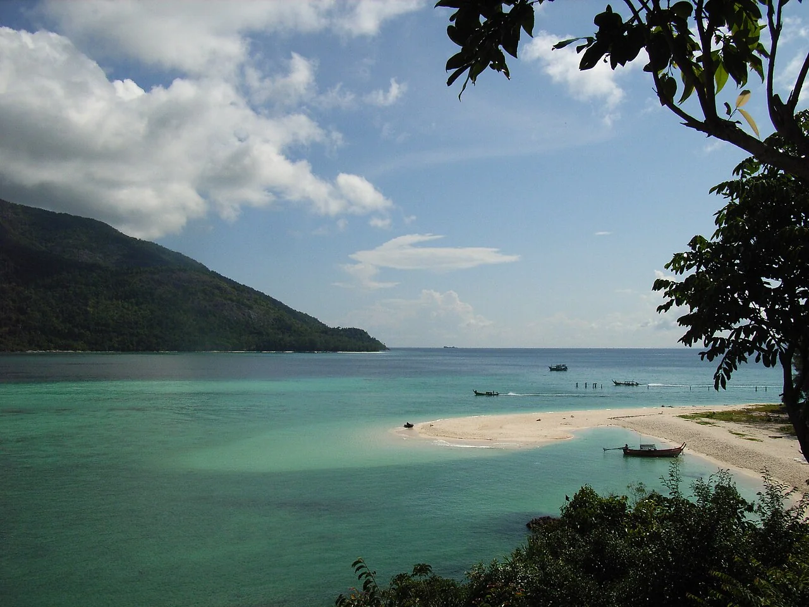

Ko Lipe
Satun, Thaïlande · snorkeling, plongée

Une île du sud de la mer d’Andaman bordée de récifs. Le snorkeling fait partie des activités mises en avant par le tourisme thaïlandais.
- Lieu
- Satun, Thaïlande
- Niveau
- Variable selon les conditions
- Activités
- snorkeling, plongée
- Type d'eau
- Mer / océan
- Coordonnées
- 6.49, 99.31 (position approximative du secteur)
Ouvrir dans Ocean Buddy Télécharger sur l'App Store
Source : Tourism Authority of Thailand.